Approche multi-bloc pour l’étude de l’influence de l’environnement sur l’hétérogénéité spatio-temporelle du méta-métabolome du périphyton
2025
Auteur: Jhodi Avizara
Introduction
Face aux changements globaux, il est crucial de mieux comprendre l’effet et l’influence réciproque des stress environnementaux sur les communautés microbiennes qui jouent un rôle important dans la biodiversité structurelle et fonctionnelle des écosystèmes. Parmi ces communautés, le périphyton a fait l’objet de nombreux travaux en écotoxicologie microbienne pour caractériser l’effet du stress chimique sur ces communautés. En effet, les espèces qui les constituent sont des indicateurs clés de l’état des écosystèmes car elles sont omniprésentes dans divers écosystèmes et réagissent rapidement aux changements environnementaux et soutiennent de nombreuses fonctions et services écosystémiques [13].
Malgré l’accroissement des connaissances sur l’effet de divers stress environnementaux en conditions contrôlées sur ces communautés [12,16], la transposition de ces résultats à des contextes réels demeure complexe en raison de la variabilité environnementale. Dans cette optique, il est essentiel de mieux comprendre la variation naturelle de ces communautés, tant sur le plan structurel que fonctionnel, ainsi que les déterminants (e.g. environnementaux) de cette variation. Cela inclut l’exploration des relations entre les niveaux de biodiversité, en lien avec les phénomènes de redondance fonctionnelle, (i.e. changement de structure sans changement de fonctionnement basé sur le fait que plus d’une espèce peut contribuer à un processus particulier), et de plasticité phénotypique (i.e., changement fonctionnel sans changement de structure basé sur la capacité d’un organisme à exprimer différents phénotypes selon les conditions environnementales).
Dans ce contexte, les approches moléculaires en écotoxicologie microbienne offrent le potentiel de révéler de nouveaux éléments de l’adaptation des écosystèmes face aux stress environnementaux. En effet, le développement récent des omiques a permis de montrer leur pertinence pour la caractérisation intégrée et sensible de la réponse des communautés microbiennes à leur environnement sur le plan fonctionnel et structurel. En particulier, la méta-métabolomique, qui étudie l’ensemble des métabolites en générant un profil de petites molécules dérivées du métabolisme cellulaire au sein d’un ensemble d’organismes, fournit des informations fonctionnelles sur cette communauté et les interactions associées [22]. C’est donc une approche de choix pour caractériser le phénotype moléculaire d’une communauté microbienne qui est de plus en plus utilisée en écologie microbienne [30]. De manière complémentaire, la métagénomique offre la possibilité d’explorer la composition et la diversité en taxon et en gène de l’ensemble de la communauté. Ainsi, combiner les deux approches pourrait permettre de mieux comprendre le lien entre biodiversité structurelle et fonctionnelle. Toutefois, un enjeu majeur en écotoxicologie microbienne est d’arriver à caractériser les déterminants environnementaux (e.g. température, teneur en nitrate/en phosphate) de cette biodiversité. Un enjeu supplémentaire est d’arriver à évaluer dans quelle mesure ces changements peuvent avoir des conséquences sur des fonctions écologiques (e.g. fonction photosynthétique).
L’intégration de données hétérogènes, incluant des données omiques, environnementales et physiologiques, est nécessaire pour comprendre la dynamique des communautés microbiennes périphytiques sur le plan structurel (e.g. taxon, gène) et fonctionnel (e.g. métabolome) en lien avec l’environnement [4]. L’approche multi-omique, qui combine plusieurs omiques, pourrait contribuer à révéler ces dynamiques, mais elle se heurte à la difficulté d’intégrer des données non omiques (paramètres environnementaux et physiologiques). Cependant, l’intégration de données non-omiques dans des modèles soulève des défis significatifs, principalement en raison de la complexité et de l’hétérogénéité de ces données.
Intégré dans des modèles prédictifs, l’interprétation des données non-omiques peuvent fortement varier en fonction des méthodes de traitement et/ou de prétraitements, d’où la nécessiter de standardiser ces méthodse avant toute intégration de données [23]. Néanmoins, l’approche multi-bloc semble mieux adaptée pour comprendre comment ces stress interagissent et modulent la dynamique des communautés dans des conditions réelles. En effet, la réponse du périphyton aux stress environnementaux, tels que la pollution par les métaux lourds ou les variations de nutriments, est souvent complexe et dépendante de l’état de maturation des biofilms. Des études ont montré que les communautés périphytiques matures peuvent présenter une tolérance accrue aux contaminants [13], en partie grâce à leur capacité à recycler les nutriments et à s’adapter aux conditions environnementales changeantes. Cela souligne l’importance d’une approche intégrative pour appréhender les interactions entre les facteurs environnementaux et les réponses fonctionnelles des communautés microbiennes dans les écosystèmes aquatiques.
Dans ce contexte, les projets MICROBIOMIQ et COMBO visent à aborder l’hétérogénéité temporelle et spatiale, respectivement, des communautés microbiennes périphytiques face à la contamination chimique des écosystèmes aquatiques dans un contexte de changements globaux. Le projet MICROBIOMIQ se concentre sur l’analyse des facteurs environnementaux influençant la biodiversité des microorganismes, en utilisant des approches métagénomiques et métabolomiques pour comprendre leur acclimatation aux stress environnementaux dans le temps. Le projet COMBO, quant à lui, approfondit la connaissance de l’hétérogénéité spatiale du métabolome du périphyton et de la fonction photosynthétique, en examinant le métabolisme et le rendement photosynthétique des communautés périphytiques selon la physico-chimie de l’eau, notamment la contamination chimique.
Sur le plan « analytique », ces projets nécessitent d’intégrer des données omiques et non omiques pour étudier comment les paramètres physico-chimiques des milieux aquatiques structurent les communautés microbiennes périphytiques, tant sur le plan taxonomique que fonctionnel, dans le temps et dans l’espace. Ainsi, nos travaux de stage avaient pour objectif de développer un pipeline bioinformatique pour cette intégration de données hétérogènes. Pour ce faire, nous avons adopté la méthodologie suivante : une recherche bibliographique approfondie a été mise en oeuvre afin de mieux comprendre le contexte écologique du périphyton, les enjeux liés à l’intégration de données omiques et non omiques, ainsi que pour évaluer les différents outils multi-bloc au travers d’un benchmark. Par la suite, nous avons mis en place un pipeline d’analyse bioinformatique pour intégrer ces données et étudier comment les paramètres physico-chimiques des milieux aquatiques structurent les communautés microbiennes périphytiques, tant sur le plan taxonomique que fonctionnel, dans le temps et dans l’espace. Dans cet optique, nous avons émis l’hypothèse que certains paramètres physico-chimiques étaient plus déterminants que d’autres et pouvaient influencer le métabolisme, soit directement, soit par l’intermédiaire d’un taxon. Nous avons aussi émis l’hypothèse que la composition taxonomique pouvait elle-même varier sans que le métabolisme ne soit affecté. Aussi, nous avons considéré qu’une approche basée sur la corrélation devrait permettre d’élucider en première approche ces différents types d’interdépendances (ou d’indépendance).
État de l’art
Étude du périphyton aquatique dans le contexte des changements globaux
Le périphyton est un biofilm phototrophe constitué d’un mélange de microorganismes, d’algues, de cyanobactéries, de champignons et d’autres microbes enchâssés dans une matrice extracellulaire d’exoplysacharides (EPS) produite par les organismes composant le biofilm (Figure 1.1).
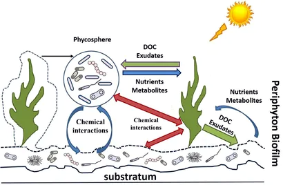
On le trouve généralement dans presque tous les milieux aquatiques, allant des étangs aux océans, et des environnements oligotrophes aux milieux eutrophes, à l’exception des zones boueuses et sableuses à l’embouchure des cours d’eau. Les communautés microbiennes périphytiques jouent un rôle majeur dans le fonctionnement des écosystèmes et le maintien des services écosystémiques, dont notamment le renouvellement des nutriments, l’accumulation de certains métaux lourds comme le mercure [10], la régulation des populations d’autres organismes aquatiques [16] et la production primaire des écosystèmes aquatiques. Dans ce cadre, la tolérance et la résilience des communautés face au stress, notamment en réponse à la contamination par les micropolluants (e.g. pesticides), deviennent des aspects cruciaux à considérer et constituent un enjeu majeur de recherche en écotoxicologie microbienne.
Des études expérimentales ont montré que l’exposition à des concentrations croissantes de contaminants inorganiques (cuivre) et de contaminants organiques (pesticides, composés pharmaceutiques) avait un impact significatif sur le fonctionnement (photosynthèse, activités enzymatiques) et la structure (composition en espèces, biomasse) des communautés périphytiques [13, 16]. Pour autant, les « mécanismes » structurels et fonctionnels sous-jacents, ainsi que leur synchronisation au regard de l’effet des stress environnementaux, sont encore peu documentés. Un enjeu important est donc de décrire les fluctuations de la diversité taxonomique et du fonctionnement des communautés afin de mieux comprendre leur relation face à la pression chimique [12]. Bien que des recherches récentes montrent que la composition taxonomique et le fonctionnement peuvent évoluer en réponse à un stress chimique, elles soulignent également que des modifications de la biodiversité structurelle ne conduisent pas nécessairement à des changements fonctionnels au sein des communautés microbiennes, en raison d’un phénomène de redondance fonctionnelle. À l’inverse, des changements fonctionnels peuvent se produire rapidement sans variations dans la diversité taxonomique, en lien avec un phénomène de plasticité phénotypique [36], qui pourrait également résulter d’une désynchronisation de ces processus.
Globalement, les études révèlent que la diversité et la composition des communautés influencent leur capacité à tolérer les perturbations. Par exemple, les communautés hivernales, caractérisées par une plus grande diversité taxonomique et une richesse spécifique, montrent une résistance accrue aux stress environnementaux, suggérant que des communautés plus diversifiées peuvent mieux se tolérer et/ou se rétablir après des perturbations [19]. De plus, l’importance de la biomasse et de la structure du biofilm dans la protection contre les contaminants souligne que des conditions environnementales favorables à la production de biomasse de matrice extracellulaire, comme des niveaux élevés de nutriments, peuvent promouvoir la résilience en soutenant des espèces plus tolérantes, voire résistantes.
Les approches moléculaires, telles que les omiques, offrent une voie prometteuse pour évaluer ces dynamiques complexes, en fournissant des informations détaillées sur les réponses fonctionnelles et structurelles des communautés microbiennes et leur relation. Cela devrait permettre de renforcer notre compréhension des mécanismes de tolérance et de résilience des écosystèmes aquatiques face aux stress anthropiques.
###. Les omiques et leurs applications sur les communautés microbiennes aquatiques
Les omiques, les méta-omiques et leur couplage
Définitions
Le terme « omique » englobe des disciplines comme la génomique, la transcriptomique, la protéomique et la métabolomique. Selon Jackson et al. (2006) [20], le suffixe « -ome » désigne une multitude de mesures par échantillon, caractérisant un état biologique d’un organisme ou d’un ensemble d’organismes (méta-omique).
L’objectif des approches omiques est d’acquérir une compréhension intégrée de la biologie en étudiant tous les processus biologiques, bien que des défis subsistent en raison de la complexité des systèmes (Figure 1.2).
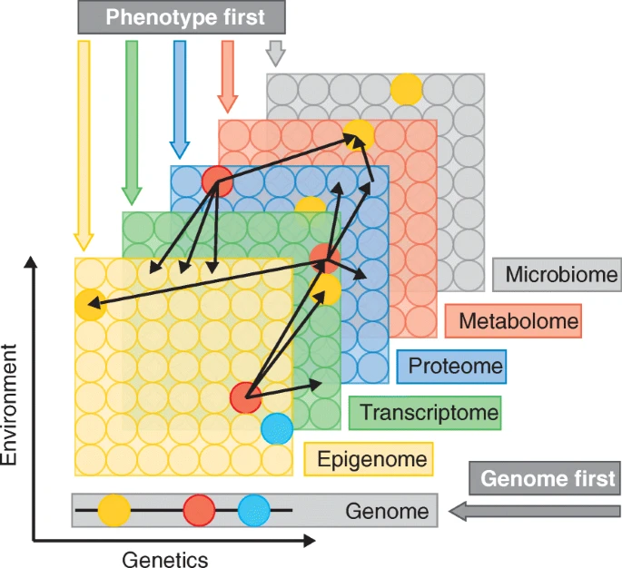
La génomique est un omique qui se concentre sur l’étude des gènes, du point de vue de leur séquence ou de leur fonction ; on parle ainsi de génomique structurale et fonctionnelle. Globalement, la génomique étudie l’expression des gènes séquencés, en utilisant des approches expérimentales à grande échelle pour analyser simultanément de nombreux gènes. Dans certaines études elle est utilisée pour comprendre l’importance adaptative des gènes et des moteurs des processus écologiques et évolutifs [17,28]. Dans notre contexte d’étude, elle est utilisée pour caractériser la diversité des taxons et prédire le fonctionnement d’une communauté.
La métabolomique étudie l’ensemble des métabolites (i.e. petites molécules <2000 Da) dérivées du métabolisme cellulaire et peut refléter directement le résultat de réseaux complexes de réactions biochimiques, fournissant ainsi des informations sur de multiples aspects de la physiologie cellulaire [22] ou servir à l’identification de biomarqueurs pour du profilage en ciblant des métabolites spécifiques qui reflètent un état physiologique précis [31].
Pour chaque omique, l’évolution des outils d’analyse a permis l’acquisition d’une quantité toujours plus importante de données. Aussi, deux approches analytiques sont globalement décrites dans la littérature : l’analyse ciblée et non ciblée [6]. L’analyse ciblée quantifie un nombre limité de molécules connues, tandis que l’approche non ciblée compare l’ensemble des molécules sans hypothèse préalable.
Les méta-omiques, multi-omiques et applications environnementales
Aujourd’hui, l’analyse des omiques ne se limite plus qu’à l’étude d’un seul organisme mais peut s’étendre à l’échelle d’une communauté de plusieurs espèces, on parle de méta-omique. Cette avancée permet d’obtenir une vue d’ensemble des processus cellulaires et des interactions au sein d’un écosystème microbien/cellulaire, facilitant ainsi la compréhension des réponses biologiques et écologiques aux stress environnementaux, tels que la pollution chimique. Cela ouvre la voie à des évaluations écotoxicologiques plus efficaces et à une meilleure prise de décision en matière de gestion environnementale, en permettant d’identifier les mécanismes sous-jacents à la dégradation des écosystèmes et en facilitant l’étude des impacts cumulés de multiples polluants [33].
Concernant les communautés libres telles que les biofilms d’eau douce, des études récentes ont démontré la pertinence de la métabolomique non ciblée pour caractériser de manière sensible et précoce la réponse au stress chimique mais également des changements fonctionnels à plus long terme [11, 26, 34]. De manière complémentaire, la métabarcoding apparaît comme une méthode de choix pour caractériser l’altération de la diversité et la composition en espèces des communautés microbiennes aquatiques dans l’eau et les sédiments [8]. De plus, ces exemples illustrent également les limites des approches de méta-omique, car très vite dans ces études, l’idée de confronter d’autres données omiques, afin d’avoir un vision globale des mécanismes en oeuvre, vient tout naturellement, d’où la nécessité des approches multi-omiques.
L’approche multi-omique constitue une stratégie intégrative qui combine plusieurs types de données omiques pour obtenir une compréhension plus complète d’un système biologique [4]. L’intégration de plusieurs jeux de données permet de mettre en évidence des relations qui ne seraient pas visibles en étudiant une seule couche. L’application conjointe de l’analyse multi-omique permet d’approfondir la compréhension des différences dans l’expression des gènes et des protéines, ainsi que des changements de composition des métabolites. Par exemple, une étude de Paix et al. (2021) [8] sur l’holobionte algal Taonia atomaria a utilisé une approche multi-omique pour examiner comment les variations du métabolome de surface influencent les communautés microbiennes épiphytiques à l’échelle du thalle. En combinant des données de métabarcoding et de métabolomique, les chercheurs ont pu établir des liens entre la composition chimique de la surface de l’algue et la diversité des communautés bactériennes, révélant ainsi que des métabolites spécifiques, tels que le diméthylsulfoniopropionate (DMSP), peuvent jouer un rôle clé dans la structuration de ces communautés.
Cette approche souligne l’importance de l’intégration de données hétérogènes, car elle permet de croiser des informations provenant de différentes sources et niveaux d’analyse (e.g. génomiques, transcriptomiques, protéomiques et métabolomiques). Alors que l’approche multi-omique offre déjà une compréhension approfondie des interactions biologiques, élargir cette intégration aux données non-omiques, telles que les données environnementales, permettrait de saisir pleinement les dynamiques complexes qui régissent les écosystèmes et d’optimiser les stratégies de gestion environnementale.
Intégration de données hétérogènes et analyse multibloc
Enjeux actuels de l’intégration de données hétérogènes et des analyses multibloc
Dans les approches d’intégration de données hétérogènes, on peut se retrouver avec un nombre assez conséquent de données et de nature hétérogène de surcroît [9], on préfère alors l’utilisation du terme d’analyse multi-bloc. Cependant, l’intégration de données omiques et non omiques (OnO) pose des défis supplémentaires pour l’analyse computationnelle. Selon López et al. (2019) [23], peu d’études ont réussi à réaliser une intégration efficace de ces types de données.
Les interactions OnO peuvent être complexes, car les variations au sein d’un bloc de données peuvent entraîner des anomalies, créant ainsi des relations intriquées entre les données moléculaires et environnementales. Par conséquent, une approche intégrative qui prend en compte ces interactions est essentielle pour améliorer la précision des modèles prédictifs. Un autre défi dans l’intégration des données OnO est d’assurer une contribution équitable des différents blocs de variables, afin d’éviter que certains blocs dominent l’analyse [13]. De plus, dans le domaine de la génomique, la prise en compte de sous-phénotypes hétérogènes peut compliquer la définition du modèle OnO, car ignorer ces sous-phénotypes pourrait nuire à la performance du modèle.
En écotoxicologie, ce type d’approche reste très rare. Néanmoins, une étude récente basée sur DIABLO (multi-bloc sPLS-DA) a mis en évidence une forte covariation saisonnière entre les métabolites (métabolomique non ciblée par LC-MS) et les bactéries (métabarcoding 16S rDNA) en lien avec la présence de cuivre et les variations de température. Cela indique que les variations saisonnières des conditions environnementales influencent la structure et le fonctionnement des communautés microbiennes [30]. De plus, une autre étude a révélé que certains métabolites, tels que le diméthylsulfoniopropionate (DMSP) et des dipeptides, étaient positivement corrélés à des taxons bactériens spécifiques, suggérant que la chimie de surface des algues joue un rôle actif dans la sélection des communautés épiphytes [8].
Globalement, l’utilisation d’analyses multi-bloc permet non seulement de mieux comprendre les interactions entre les organismes et leur environnement, mais aussi d’identifier les facteurs influençant la diversité et la fonction de ces communautés dans divers contextes écologiques. Se faisant, cette approche intégrative pourrait potentiellement contribuer à développer des stratégies de gestion durable des ressources et à évaluer les impacts des changements environnementaux sur les écosystèmes.
Algorithmes utilisés en multi-bloc
L’intégration de données omiques repose sur divers algorithmes qui facilitent l’interprétation et l’analyse des données (Tableau 1.1).
Parmi ces méthodes, la Orthogonal Partial Least Squares (OPLS), la Sequential Orthogonalized Partial Least Squares (SO-PLS), la Partial Orthogonalized Partial Least Squares (PO-PLS), la Sparse Partial Least-Squares (S-PLS) et la Regularized Generalized Canonical Correlation Analysis (RGGCA) offrent des approches variées pour traiter des ensembles de données multi-omiques et non-omiques. Enfin, la MB-PLS (Multi-Block Partial Least Squares) se distingue comme une extension de la PLS, permettant d’incorporer plusieurs blocs de données tout en maintenant une dimension d’échantillon commune. Ces algorithmes sont conçus pour améliorer la précision des prédictions et faciliter l’extraction d’informations pertinentes à partir de jeux de données complexes.
Tableau 1.1 – Résumé de quelques outils multi-blocs
| Algorithmes et références | Description | Force | Limites |
|---|---|---|---|
| S-PLS (Sparse Partial Least-Squares) - Dongh wan Lee et al. (2011) [21] |
Intègre une sélection de variables basée sur une régression lasso, parcimonieuse et efficace en cas de multicolinéarité. | Surpasse les performances de la PLS standard. Permet d’utiliser différents types de pénalités (L1, ridge, elastic-net) | Sensible au bruit. Temps de traitement plus lent. |
| RGGCA (Regularized Generalized Canonical Correlation Analysis) - Tenenhaus et al. (2011) [37] |
Trouve des combinaisons linéaires de variables de blocs, permettant d’intégrer des modèles hiérarchiques variés. | Stabilité avec des données mal conditionnées. | Absence de solution analytique donc nécessite l’utilisation d’un algorithme convergent basé sur la PLS. |
| SO-PLS (Sequential Orthogonalized Partial Least Squares) - Niimi et al. (2013) [29] |
Gère des blocs de dimensions différentes, adaptée pour combiner des variables de conception avec des données spectrales. | Incorpore des blocs de données supplémentaires de manière séquentielle. Non itératif. | L’ordre des blocs dans l’analyse peut influencer les résultats. |
| PO-PLS (Partial Orthogonalized Partial Least Squares) - Niimi et al. (2013) [29] |
Estime des sous-espaces communs et uniques à travers plusieurs blocs de données. | Estimation des sous-espaces communs et uniques. Capables de gérer des données avec des dimensions différentes. | Sensible au bruit. |
| Consensus-OPLS - JulienB et al. (2013) [5] |
Combine l’implémentation du noyau de l’algorithme OPLS avec une procédure de fusion de données pour évaluer simultanément plusieurs blocs de données. | Interprétation plus aisée des modèles en se concentrant sur l’information prédictive. Les composantes orthogonales peuvent mettre en évidence des variations systématiques inattendues. | Absence d’optimisation stricte des poids des blocs. Dépendance à la linéarité. |
| OPLS (Orthogonal Partial Least Squares) - Thevenot et al. (2017) [38] |
Améliore l’interprétation des composants prédictifs et des variations systématiques. | Efficacité avec des données multicolinéaires. | Sensible au surajustement. |
| MB-PLS (Multi Block Partial Least Squares) - Baum et al. (2019) [3] |
Extension de la PLS pour intégrer plusieurs blocs de données partageant une dimension d’échantillon commune. | Facile d’interprétation grâce à la structure des variables latentes. Faible temps d’exécution. | Performance variable selon la structure des données. |
Matériel et méthode
Méthodologie des projets MICROBIOMIQ et COMBO
Le projet MICROBIOMIQ et le projet COMBO visent à caractériser l’influence des facteurs environnementaux sur l’hétérogénéité temporelle (MICROBIOMIQ) et spatiale (COMBO) du métabolisme, de la fonction photosynthétique et de la composition taxonomique du périphyton tout en cherchant à évaluer les interdépendances entre ces métriques (i.e. liens entre les changements structuraux et fonctionnels).
Pour ce faire, dans le cadre de MICROBIOMIQ, un suivi longitudinal a été réalisé sur l’étang de Gazinet entre mars 2022 et août 2023. Il a consisté en un échantillonnage mensuel du périphyton par colonisation sur lame de verre durant 4 semaines. Chaque mois, la composition taxonomique et le métabolisme du périphyton ont été caractérisés par métagénomique (Whole genome sequencing par Illumina NextSeq 2000) et méta-métabolomique (non ciblée par LC-HRMS/MS). L’activité photosynthétique a été évaluée à travers la mesure du rendement photosynthétique avec un PhytoPAM® permettant de rendre compte de l’état physiologique de la communauté et plus spécifiquement des photosystèmes. En parallèle, une trentaine de paramètres environnementaux incluant la physico-chimie de l’eau (température, pH, oxygène dissous, matière en suspension, micropolluants, nutriments) et les conditions météorologiques (précipitation, irradiance) ont été mesurés.
Dans le cadre du projet COMBO, du périphyton autochtone a été collecté sur des cailloux sur un total de 45 sites en Nouvelle-Aquitaine au printemps et à l’automne 2024. Le métabolisme de ces communautés a été caractérisé par méta-métabolomique non ciblée (LC-HRMS/MS). L’activité photosynthétique a été évaluée in situ à travers la mesure du rendement photosynthétique à l’aide d’un Diving PAM. Pour chaque période de prélèvement, les données physico-chimiques de l’eau ont été récupérées auprès de l’agence de l’eau Adour Garonne (AEAG) (environ 300 paramètres dont 250 micropolluants).
Les détails de la méthodologie et des variables sont fournis en annexe 1, tandis que le tableau 2 présente une synthèse des données générées. Pour MICROBIOMIQ, la variable à expliquer (Y) est un vecteur de longueur 33, comprenant 11 classes uniques qui correspondent aux mois et à l’année de prélèvement (e.g. Apr22, Feb23). Il y a en tout 8 mois différents (Février, Mars, Avril, Mai, Juin, Juillet, Août et Septembre) et deux années (2022 et 2023). Cependant, seuls les mois d’Avril, Juillet et Août ont pu être prélevés deux fois. Quant à COMBO, la variable à expliquer contient 81 variables pour 39 classes uniques qui correspondent aux sites de prélèvement.
Tableau 2.1 – Résumé des jeux de données
| MICROBIOMIQ | COMBO | |||||
|---|---|---|---|---|---|---|
| Variables | Échantillons | Variables | Nombre de sites | Échantillons | Variables | Nombre de sites |
| Physico-Chimie | 33 | 17 | 11 | 78 | 298 | 39 |
| Fluorescence | 33 | 11 | 11 | 348 | 7 | 39 |
| Métabolomique | 33 | 6712 | 11 | 348 | 16914 | 39 |
| Metabarcoding (OTU) | 33 | 2601 | 11 | 348 | 2601 | 39 |
A noter que pour les données de métagénomique (MICROBIOMIQ) et de métabolomique (MICROBIOMIQ et COMBO), les données ont été pré-traités afin d’éliminer tout artefact analytique liées aux limites de détection instrumentale, à la dérive du signal et au bruit de fond. Ces étapes préliminaires sont synthétisées en annexes.
Conception
Organisation du travail
Ce stage a consisté en la création d’un pipeline bioinformatique pour l’intégration de données hétérogènes en vue de répondre aux objectifs de MICROBIOMIQ et COMBO. Dans cette optique, ce stage s’est organisé en 3 grandes étapes :
- Une recherche bibliographique a été mise en œuvre afin de mieux comprendre le contexte biologique et écologique du périphyton et ainsi identifier les méthodes statistiques les plus pertinentes pour répondre aux enjeux de recherche actuels.
- Une évaluation de certains outils d’analyse multi-bloc a ensuite été réalisée, basée sur les performances de ces algorithmes en analyse discriminante et leur performance globale ainsi que les fonctions qu’ils proposent.
- Enfin, un pipeline d’analyse basé sur les outils sélectionnés a été mis en place et appliqué aux données de MICROBIOMIQ et COMBO afin de répondre aux objectifs scientifiques de ces projets.
Définition du pipeline générique
Dans la mesure où nous manquons d’informations sur les mécanismes structurants les communautés microbienne sous préssion de leur environnement, et qu’il existe une variété de combinaisons de données omiques et non omiques, chaque analyse multi-bloc devra être traitée comme un cas unique. D’où la nécessité de proposer un ensemble d’outils (tableau 2.2 et 2.3) pouvant s’intégrer les uns à la suite des autres pour construire un pipeline d’analyse multi-bloc.
Le pipeline que nous proposons peut se résumer en quatre grandes étapes : 1. sélection de variables (i.e. filtration) ; 2. normalisation, 3. entraînement du modèle et 4. évaluation du modèle (Figure 2.1). Il est nécessaire de s’assurer que chaque méthode employée à chacune de ces étapes s’adapte bien au jeu de données, d’où la nécessité d’explorer visuellement les jeux de données (par exemple, boxplot, carte de densité, projection en dimension réduite, etc.). Cette visualisation est également nécessaire pour l’interprétation en sortie du modèle final. Enfin, l’évaluation du modèle permet de juger de sa pertinence et d’identifier s’il a appris correctement.
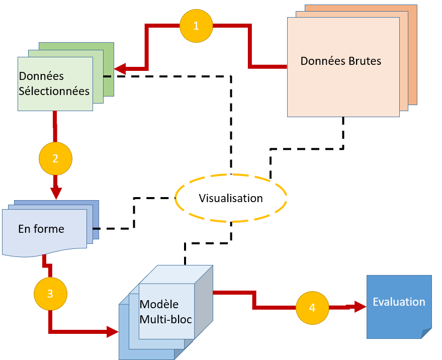
Pré-traitement : sélection de variable et scaling
En raison de la taille des jeux de données, un prétraitement est nécessaire pour sélectionner les variables les plus explicatives. Les méthodes de sélection se basent généralement sur la variation (CV, IQR), la distribution (kurtosis, indice CH) ou l’importance vis-à-vis du modèle (VIP), et peuvent être combinées pour affiner le choix.
Parmi les diverses méthodes de sélection de variables proposées dans la littérature, celles qui ont été explorées dans ce travail sont présentées dans le tableau 2.2, regroupées selon qu’elles soient supervisées ou non, et selon qu’elles se basent sur la dispersion, la distribution, la covariance ou l’importance vis-à-vis du modèle.
De plus, chaque jeu de données présente une hétérogénéité qui peut biaiser les analyses, rendant une normalisation et/ou transformation essentielle. On distingue la normalisation intra-bloc, qui uniformise l’importance des variables au sein d’une matrice, et la normalisation inter-bloc, qui traite la variation entre les blocs de données (Tableau 2.3).
Tableau 2.2 – Résumé des fonctions de sélection de variables
| Type d’approche | Fonctions et packages | Nom de la fonction | Packages R | ||
|---|---|---|---|---|---|
| Supervisée | Non-supervisée | ||||
| Dispersion des variables | |||||
| CV | get.cv.list |
base, dplyr, stats | |||
| IQR | get.IQR.list |
base, dplyr, stats | |||
| Freqcut | get.freqCut.list |
base, dplyr, stats | |||
| Uniquecut | get.uniqueCut.list |
base, dplyr, stats | |||
| Distribution des variables | |||||
| Indice CH | get.ch.list |
base, dplyr, stats | |||
| Test de Kruskal-Wallis | get.kw.list |
base, dplyr, stats | |||
| Indice de Kurtosis | get.kurt.list |
base, dplyr, stats, moments | |||
| Covariance des variables | |||||
| RDA | RDA.selection |
base, dplyr, stats, vegan | |||
| VIP selon un modèle simple bloc | get.vip.list |
base, dplyr, stats, caret |
Sélection de variables
Sélection par la dispersion
- Coefficient de variation (CV) et l’écart interquartile (IQR) : La variance d’une variable peut servir de critère pour évaluer la qualité d’une variable dans une analyse multi-bloc. Plusieurs métriques peuvent être utilisées à cet effet, telles que le coefficient de variation (CV), qui mesure la dispersion relative d’une variable, et l’écart interquartile (IQR), qui est une mesure de dispersion obtenue en calculant la différence entre le troisième et le premier quartile, pour sélectionner des variables.
- FreqCut et UniqueCut (variance proche de zéro) : Une autre méthode consiste à sélectionner les variables qui présentent peu ou pas de valeurs uniques. De telles variables affichent une variance proche de zéro et peuvent être identifiées en calculant, d’une part, le rapport entre la valeur la plus fréquente et la deuxième valeur la plus fréquente (freqCut), et d’autre part, en déterminant le pourcentage de valeurs distinctes par rapport au nombre total d’échantillons [18].
Sélection selon la distribution des variables
- Indice de Kurtosis : Une partie du pipeline qui est mise en place repose sur une analyse discriminante visant à trouver une combinaison linéaire de variables explicatives qui sépare au mieux les différentes classes. Cette séparation est d’autant plus efficace si les variables présentent une distribution plurimodale. C’est pourquoi l’indice de Kurtosis est utile, car il décrit la forme de la distribution d’une variable. La sélection consiste à identifier les variables dont la distribution s’écarte le plus d’une loi normale. Ainsi, un indice supérieur à 3 indique que la distribution est leptokurtique, ce qui signifie qu’elle est plus pointue avec des queues plus lourdes, indiquant une prévalence de valeurs extrêmes par rapport à une distribution normale [2].
- Indice Calinski-Harabasz : Une autre approche consiste à sélectionner les variables dont la distribution permet de maximiser la variance interclasse tout en minimisant la variance intraclasse, comme l’indique l’indice CH [41]. En d’autres termes, cette méthode identifie les variables dont la distribution favorise une séparation claire entre les classes, améliorant ainsi la distinction entre les groupes. L’utilisation de l’indice CH permet de déterminer quelles variables contribuent le plus à la structure des données.
Sélection par la covariance des variables
- Analyse de redondance (RDA) : La RDA est une extension directe de la régression multiple, car elle modélise l’effet d’une matrice explicative X sur une matrice de réponse Y. La différence réside dans le fait que nous pouvons modéliser l’effet d’une matrice explicative sur une matrice de réponse, plutôt que sur une seule variable de réponse. En analysant les coefficients de régression et leur significativité, il est possible de déterminer quelles variables ont un impact significatif [40].
Sélection par l’importance des variables vis-à-vis du modèle : Variable Importance in Projection (VIP)
La VIP se base sur les coefficients de régression issus de modèles tels que la régression PLS (Partial Least Squares). Chaque variable reçoit un score VIP qui indique son importance relative vis-à-vis du modèle : un score supérieur à 1 signale une contribution significative sur les performances du modèle, tandis qu’un score inférieur à 1 suggère un impact négligeable. Selon Mishra et al (2021) [27], il est possible de sélectionner des variables en passant par les VIP d’un modèle simple bloc où les blocs ont été au préalable concaténés. Les VIP quantifient la contribution de chaque variable explicative à la prédiction des résultats.
Normalisation, transformation et mise à l’échelle
En analyse multi-bloc, plusieurs niveaux de prétraitement sont nécessaires en raison de la diversité des jeux de données [7]. Le niveau I vise à améliorer la qualité des données directement issues de l’instrument de mesure, il est générique à la mise en œuvre de tout type d’analyse. Dans le cas de ce travail, ce prétraitement de niveau 1 avait déjà été réalisé (voir Annexe). Le niveau II cherche à équilibrer la contribution de chaque variable dans chaque bloc (tableau 2.3 : méthode intrabloc) et regroupe toutes les méthodes « classiques » de normalisation, transformation et scaling utilisées en statistiques. Enfin, le niveau III, contrairement aux deux précédents, est spécifique aux analyses multiblocs et ne se concentre pas sur un seul bloc, mais vise à équilibrer l’effet de chaque bloc par rapport aux autres (tableau ??).
Ce scaling inter-bloc est une étape cruciale dans le prétraitement des données multi-bloc, visant à harmoniser les différentes sources de données afin d’éliminer les biais liés aux différences d’échelle et de taille. En effet, les blocs de données peuvent varier considérablement en termes de nombre de variables et d’unités de mesure, ce qui peut fausser les résultats d’analyse si ces différences ne sont pas correctement prises en compte. Les méthodes de normalisation, qu’elles soient basées sur la moyenne ou la médiane, permettent d’éliminer ces biais, facilitant ainsi la comparaison entre les échantillons. Par exemple, la transformation logarithmique aide à stabiliser la variance et à normaliser les distributions, ce qui est particulièrement utile lorsque les données présentent des variations extrêmes [39].
De plus, la transformation CLR (Centered Log Ratio), combinant transformation et scaling, est efficace pour traiter des données compositionnelles, car elle réduit les effets de la sparsité et rend les distributions plus symétriques [24].
Les approches de scaling interbloc, telles que le soft-scaling (SBS) et le hard-block scaling (HBS), sont conçues pour équilibrer l’importance des différents blocs en tenant compte de leur taille et de leur variabilité. Ces méthodes garantissent que les blocs plus petits ne sont pas éclipsés par des blocs plus volumineux, ce qui pourrait introduire un biais dans les résultats. En outre, les méthodes de block rank scaling, qui s’appuient sur l’analyse en composantes principales (PCA) pour déterminer la dimensionnalité sous-jacente de chaque bloc, permettent d’ajuster l’importance des blocs en fonction de la variation non corrélée qu’ils apportent à l’analyse [7]. En intégrant ces techniques de normalisation inter-bloc, il est possible d’optimiser la capacité prédictive des modèles et d’améliorer l’interprétation des résultats, tout en assurant une représentation équilibrée de chaque source de données dans l’analyse multivariée.
Tableau 2.3 – Résumé des fonctions de normalisation transformation et scaling
| Catégorie | Fonction | Process | Packages utilisés |
|---|---|---|---|
| Intrabloc | classic.scale |
Normalisation par la moyenne | base, dplyr |
log.pareto |
Transformation log, normalisation de Pareto | base, dplyr, IMIFA | |
med.cub.pareto |
Normalisation par la médiane, transformation cube root, standardisation de Pareto | base, dplyr, IMIFA | |
clr |
Transformation des proportions par le logarithme centré, utilisant la moyenne géométrique | base, dplyr, composition | |
| Interbloc | SBS |
Divise par la racine quatrième du nombre de colonnes | |
| Interbloc | SBS |
Divise par la racine quatrième du nombre de colonnes | base |
| :— | :— | :— | :— |
HBS |
Divise par la racine carrée du nombre de colonnes | base | |
SHBS |
Divise par le nombre de colonnes | base | |
SBVS |
Divise par la racine quatrième du nombre de colonnes divisée par la somme des variances | base | |
HBVS |
Divise par la racine carrée de la somme des variances | base | |
SHBVS |
Divise par la somme des écarts types | base |
L’analyse discriminante vise à maximiser la séparation entre différents groupes tout en minimisant la variance au sein de chaque groupe, ce qui implique de regrouper les observations pour que les individus d’un même groupe soient aussi similaires que possible, tout en assurant une distinction claire entre les groupes. On notera que pour toute analyse multi-bloc, chaque bloc de données doit avoir un nombre de lignes identique et les mêmes labels pour les échantillons, ainsi que pour la variable à expliquer.
Le benchmark a pour objectif d’évaluer, dans un premier temps, l’influence de la filtration et du nombre de variables sur les performances des algorithmes d’analyse multi-bloc que proposent ces packages. Il s’agit des algorithmes Consensus-OPLS, RGCCA et Bloc-PLSDA, inclus respectivement dans les packages Consensus-OPLS, RGCCA et mixOmics. La filtration se fait en faisant varier les seuils de sélection des variables selon le CV et l’IQR, tout en utilisant une méthode de normalisation unique (scaling par la médiane, transformation cube root et scaling de pareto scale). Dans un second temps, nous examinerons les capacités discriminantes de ces algorithmes, puis nous évaluerons l’effet des différentes méthodes de normalisation. L’indice de Calinski-Harabasz nous a permis de comparer les résultats des algorithmes Consensus-OPLS, RGCCA et Block-PLSDA afin d’évaluer leurs forces et faiblesses lors de la phase de benchmark.
Algorithmes multi-blocs
Outils multi-bloc sélectionnés en vue du benchmark
À partir de la littérature, trois packages ont été sélectionnés : Consensus-OPLS, RGCCA et mixOmics. Chacun de ces packages intègre des algorithmes permettant l’intégration de données hétérogènes et des outils de visualisation. Le package Consensus-OPLS permet de visualiser la contribution de chaque bloc ainsi que l’importance de chaque variable à l’aide des Variable Importance Plot (VIP). Le package RGCCA propose une gamme d’outils supervisés et non supervisés, incluant un algorithme qui permet de comparer visuellement le poids de chaque bloc et variable, tout en intégrant un outil de sélection de variables. De son côté, le pipeline DIABLO du package mixOmics offre des fonctionnalités similaires. À l’instar de RGCCA, il propose également une méthode de sélection de variables (incluse dans la fonction Block-(s)PLSDA) et permet de construire un réseau de corrélation, ce qui est utile pour notre problématique. Tous ces packages fournissent des outils d’analyse discriminante, permettant une visualisation en 2D des échantillons (construite à partir de modèles multi-bloc), où le positionnement de chaque point est déterminé par les variables.
L’analyse discriminante vise à maximiser la séparation entre différents groupes tout en minimisant la variance au sein de chaque groupe, ce qui implique de regrouper les observations pour que les individus d’un même groupe soient aussi similaires que possible, tout en assurant une distinction claire entre les groupes. On notera que pour toute analyse multi-bloc, chaque bloc de données doit avoir un nombre de lignes identique et les mêmes labels pour les échantillons, ainsi que pour la variable à expliquer.
Le benchmark a pour objectif d’évaluer, dans un premier temps, l’influence de la filtration et du nombre de variables sur les performances des algorithmes d’analyse multi-bloc que proposent ces packages. Il s’agit des algorithmes Consensus-OPLS, RGCCA et Bloc-PLSDA, inclus respectivement dans les packages Consensus-OPLS, RGCCA et mixOmics. La filtration se fait en faisant varier les seuils de sélection des variables selon le CV et l’IQR, tout en utilisant une méthode de normalisation unique (scaling par la médiane, transformation cube root et scaling de pareto scale). Dans un second temps, nous examinerons les capacités discriminantes de ces algorithmes, puis nous évaluerons l’effet des différentes méthodes de normalisation. L’indice de Calinski-Harabasz nous a permis de comparer les résultats des algorithmes Consensus-OPLS, RGCCA et Block-PLSDA afin d’évaluer leurs forces et faiblesses lors de la phase de benchmark.
Évaluation des performances
Le pipeline d’entraînement du modèle varie en fonction du modèle sélectionné, mais dans tous les cas, il est essentiel d’effectuer des allers-retours entre le prétraitement et l’entraînement afin d’affiner le modèle. Dans notre situation, nous ne disposons d’aucune donnée de référence pour établir un lien entre un profil métabolique ou taxonomique et l’environnement. De plus, le manque et/ou le déséquilibre des données limitent les méthodes d’évaluation de nos modèles.
Ces contraintes nous ont donc conduits à adopter une méthode de validation croisée (Cross Validation) pour évaluer le taux d’erreur des modèles. Deux approches de validation croisée ont été mises en œuvre [35] :
- k-fold Cross-Validation : Dans cette méthode, les données sont divisées en plusieurs sous-ensembles, appelés “folds”. Le modèle est ajusté sur tous les sous-ensembles sauf un, qui est utilisé pour tester la performance du modèle. Ce processus est répété plusieurs fois, chaque sous-ensemble étant utilisé une fois comme ensemble de test. Cela permet d’obtenir une estimation robuste de la performance du modèle en réduisant le risque de surajustement.
- Leave-One-Out Cross-Validation (LOOCV) : Cette méthode consiste à laisser de côté une seule observation à la fois pour tester le modèle, tandis que toutes les autres observations sont utilisées pour l’entraînement. Ce processus est répété pour chaque observation dans le jeu de données. Bien que cette méthode puisse être plus coûteuse en termes de calcul, elle fournit une évaluation très précise de la performance du modèle, car chaque observation est utilisée à la fois pour l’entraînement et pour le test.
Les capacités discriminantes des modèles peuvent aussi être mesurées a posteriori via la silhouette. Cette mesure permet d’évaluer la qualité de la classification des échantillons en fournissant des informations sur la cohésion et la séparation des clusters [32]. Une silhouette élevée indique que les échantillons sont bien regroupés au sein de leurs clusters respectifs, tandis qu’une silhouette faible ou négative suggère que certains échantillons pourraient être mal classés. En intégrant cette évaluation, nous pouvons mieux comprendre comment nos modèles se comportent en termes de discrimination entre les différentes classes d’échantillons.
3.2.7. Exploration, visualisation et ordination des données
Outils de classification
Des méthodes classiques de statistique descriptive ont été utilisées en amont pour garantir la cohérence des tableaux de données, notamment à travers des représentations telles que des boxplots, des histogrammes et des analyses en composantes principales (ACP). En aval, pour évaluer la qualité du prétraitement sur le modèle, des graphiques ont été réalisés pour montrer la contribution relative des différents blocs ainsi que celle du modèle lui-même (loading, VIP, etc.). De plus, une représentation dans un espace réduit a permis de visualiser la position relative de chaque échantillon, facilitant ainsi l’identification de clusters potentiels.
Ordination
Pour l’ordination, une projection des jeux de données dans un espace réduit a été effectuée à l’aide de l’UMAP (Uniform Manifold Approximation and Projection). Cet algorithme de réduction de dimension est basé sur des techniques manifold (qui étudie des espaces à plusieurs dimensions) [25] et il permet d’identifier des classes d’échantillons par le biais d’un clustering hiérarchique non supervisé. Le clustering a été fait sur les coordonnées des échantillons de l’espace réduit renvoyé par l’UMAP sur les données physico-chimiques.
Réseau de corrélation
Pour étudier les relations entre les différents paramètres analysés lors de l’analyse multi-bloc, nous construisons un réseau qui établit les associations entre les paramètres environnementaux, les métabolites et les taxons. L’architecture de ce réseau dépend du modèle choisi pour sa construction et, en amont, des blocs de données utilisés. Dans le projet MICROBIOMIQ, nous visons à examiner comment les métabolites et les taxons se structurent dans le temps, tandis que dans le projet COMBO, nous nous concentrerons sur la structuration des métabolites dans l’espace au regard de la physico-chimie de l’eau. Ce réseau constitue un élément central de l’interprétation biologique de ces deux projets. La détection de communautés dans le réseau de corrélation est essentielle pour discriminer les facteurs environnementaux en eux et visuellement identifier les métabolites et taxons spécifiques à un ou plusieurs paramètres, et voir comment les métabolites et les taxons se regroupent en fonction de leurs interactions. L’algorithme de Louvain peut révéler des structures sous-jacentes qui pourraient ne pas être immédiatement apparentes en segmentant le réseau en communautés, où les membres d’une même communauté sont plus densément connectés entre eux qu’avec ceux des autres communautés. Cependant, l’algorithme de Louvain, bien qu’efficace pour des réseaux de grande taille, présente des limitations en termes de détection de communautés mal connectées [1].
Résultats et discussions
Benchmark des différents outils pour la sélection de l’algorithme multibloc et du package
Influence de la filtration sur les performances du modèle
Dans un premier temps, en reprenant le pipeline de Paix et al. (2021) [8], nous avons procédé à une triple filtration par le Coefficient de Variation (CV), l’Intervalle Interquartile (IQR) et la RDA. Cependant, dans la mesure où nous souhaitons conserver un nombre suffisant de variables pour une approche exploratoire, la sélection via la RDA s’est avérée trop drastique, ne conservant que 3 à 4 % des données pour les métabolites et les OTUs, et s’est révélée coûteuse en temps de calcul (jusqu’à 4 heures de traitement sans parallélisation). De plus, cette méthode n’offrait pas de performances satisfaisantes pour les modèles, avec un taux d’erreur supérieur à 40 %. Nous avons donc décidé de n’utiliser que la filtration par CV et IQR pour ce benchmark.
Cette méthode consiste à calculer séparément le CV et l’IQR pour chaque bloc de données. Ensuite, nous avons sélectionné les variables ayant les meilleurs scores dans chaque cas. Le nombre de variables retenues dépendait des valeurs de percentile que nous avions préalablement choisies pour le CV et l’IQR. Enfin, nous avons rassemblé les variables qui présentaient à la fois un bon score de CV et un bon score d’IQR, garantissant ainsi une sélection robuste et pertinente des variables pour notre analyse. Nous avons également employé une méthode de normalisation générique pour l’ensemble des blocs (méthodes de la médiane, transformation cube root et pareto) pour réaliser ce benchmark, dont les résultats sont illustrés en figure 5.
Les résultats montrent que le Consensus-OPLS ne présente qu’un R² maximum d’environ 0,267 (Figure 3.1). Nous constatons également que le nombre de variables influence faiblement ces performances, avec un minimum à 0,216. Cependant, cet algorithme propose d’autres sorties pouvant servir à la sélection de variables (VIP et loading). Bien que nous puissions observer un effet positif du nombre de variables sélectionnées selon ce nouveau critère sur la qualité du modèle, la valeur de R² ne dépasse guère 0,54 (voir figure annexe 1.13). La RGCCA rejette automatiquement les variables jugées non discriminantes, ce qui simplifie le processus d’analyse, mais révèle également que la méthode de sélection n’est pas en mesure d’optimiser les performances de cet algorithme. Le pipeline appliqué n’a permis d’atteindre qu’une moyenne de 47 % de variance expliquée sur la première composante, et jusqu’à plus de 90 % sur l’ensemble des quatre composantes. Cependant, les modèles les plus performants ne contiennent qu’un très faible nombre de variables, ce qui n’est pas idéal pour répondre à la question biologique.
Nous pouvons faire le même constat pour la block-PLSDA, même si le meilleur modèle possède plus de variables que la RGCCA. Avec une sélection drastique des variables (en gardant environ 10 % des variables), nous pouvons aisément atteindre un taux d’erreur de moins de 5 %.
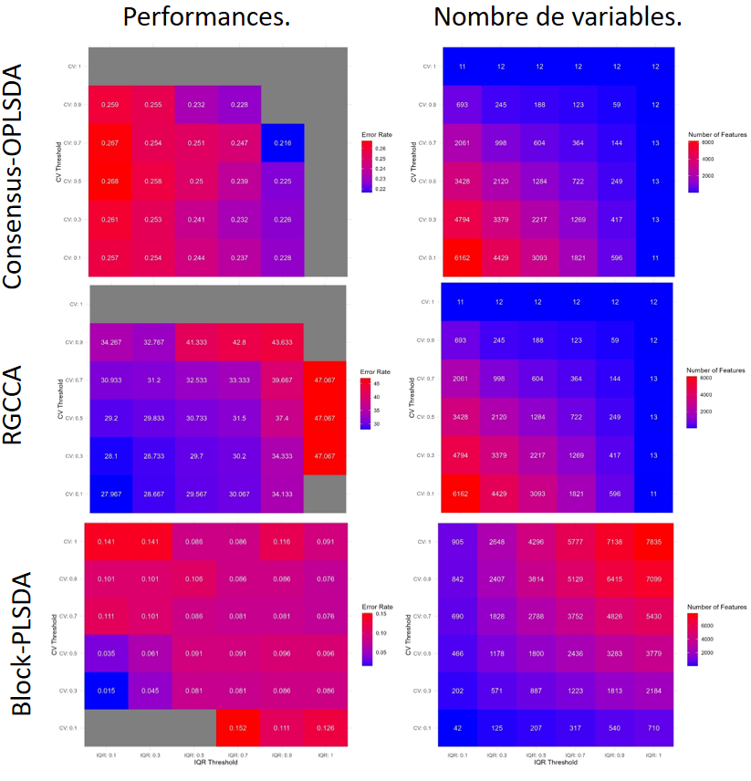
Évaluation des capacités discriminantes des modèles
En termes d’analyse discriminante, la RGCCA et la Consensus-OPLS sont équivalentes et semblent surpasser la block-PLSDA (Figure 3.2). Cependant, nous notons que DIABLO ne permet pas de visualiser l’ensemble des variables de manière globale, mais uniquement du point de vue d’un bloc de données à la fois. Cela présente l’avantage d’identifier le bloc le plus discriminant mais rend difficile la comparaison. En somme, les sorties de la Consensus-OPLS et de la RGCCA semblent offrir les meilleures performances selon l’indice de Calinski-Harabasz (CH).
Visualisation des données
Les packages RGCCA et mixOmics proposent de visualiser les variables dans un espace factoriel sous la forme d’un circular plot (Figure 3.3 b et c). Cela nous permet d’observer les groupes de variables corrélées entre chaque bloc. Cependant, avec un nombre élevé de variables, la lecture et l’interprétation deviennent difficiles. Le package ConsensusOPLS, quant à lui, ne permet pas d’appréhender cette idée de corrélation entre les variables, mais il fournit l’importance de chaque variable de chaque bloc par rapport au modèle, selon leurs valeurs VIP et loading (Figure 3.3 a).
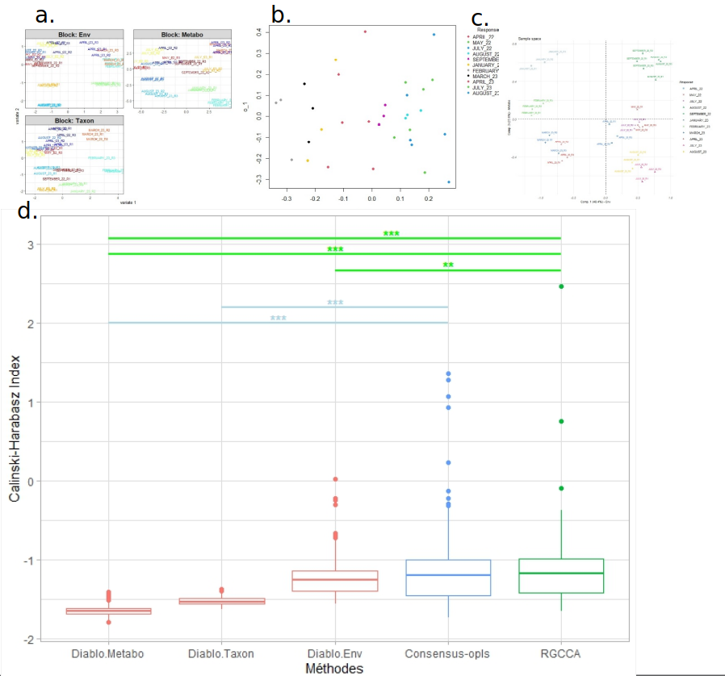
MixOmics propose de visualiser la relation entre les variables dans un réseau de corrélation (Figure 1.18). Toutefois, comme précédemment, plus le nombre de variables est élevé, plus l’interprétation devient difficile. Néanmoins, cela a l’avantage de mettre en évidence la notion de relation tri-partite entre les différentes variables que nous évoquions dans les objectifs de MICROBIOMIQ et COMBO.
Choix du modèle
Notre choix s’est finalement porté sur la Block-PLSDA du pipeline DIABLO car cette méthode offre des performances satisfaisantes, comparables à celles de la RGCCA, tout en permettant une meilleure flexibilité dans la sélection des variables. En effet, la Block-PLSDA a démontré une capacité à gérer un plus grand nombre de variables tout en maintenant un taux d’erreur inférieur à 5 %, ce qui est crucial pour notre approche exploratoire.
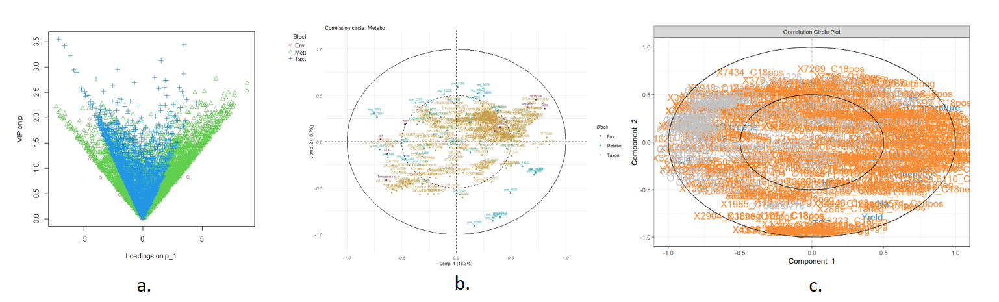
En comparaison, bien que la RGCCA rejette automatiquement les variables non discriminantes, ce qui simplifie l’analyse, elle ne permet pas d’explorer pleinement la richesse des données disponibles. Les modèles les plus performants de la RGCCA contiennent un nombre très limité de variables, ce qui peut restreindre notre capacité à répondre à la question biologique de départ. De plus, la Block-PLSDA permet de créer un réseau de corrélation qui met en évidence les relations entre les différentes variables, pour comprendre la structure des données et les interactions potentielles entre les facteurs environnementaux et les réponses biologiques. Cette visualisation des relations tri-partites entre les variables est particulièrement pertinente dans le contexte de notre étude, où nous cherchons à explorer les influences complexes des facteurs environnementaux sur les communautés microbiennes et les métabolites.
On peut noter que DIABLO propose, via un autre algorithme (Block-(s)PLSDA), un outil de sélection de variables, qui dans certains cas peut grandement améliorer le modèle et son interopérabilité, mais cette sélection réduit considérablement le nombre de variables. Dans la mesure où nous cherchons à explorer nos données le plus largement possible, la Block-PLSDA a été privilégiée. Le pipeline d’entraînement du modèle est donné en annexe 1.15.
Benchmark du modèle block-PLSDA
Une fois l’algorithme multibloc sélectionné, nous avons entrepris de tester d’autres méthodes de filtration et de normalisation.
Test de méthodes de sélection et de scaling sur le modèle Block-PLSDA
Bien que la double filtration par CV et IQR, associée à la normalisation par la médiane, la transformation cube root et scaling basée sur Pareto, nous ait permis de créer différents modèles assez satisfaisants en termes de performance, le nombre de variables en sortie d’un modèle performant était encore un peu limité au regard des objectifs d’identifier le maximum de lien entre métabolites, paramètres environnementaux, physiologie et microbes. Nous avons alors testé d’autres méthodes (indice CH, freqCut, Kruskal-Wallis, indice de kurtosis, Uniquecut et VIP), où, dans chaque cas, nous avons sélectionné les meilleures variables, celles supérieures au 75e percentile (Figure 3.4).
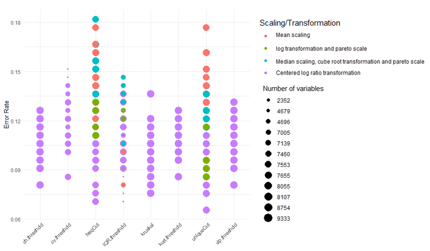
Globalement nous pouvons observer une influence réelle des méthodes de filtration et de la normalisation/transformation/scaling sur les performances du modèle (test de Kruskal-Wallis, p-value < 2,607.10⁻¹¹, dl = 7). Les résultats montrent qu’indépendamment des méthodes de sélection utilisées, l’application de la CLR garantit un modèle capable d’apprendre, bien que le taux d’erreur varie en fonction de la méthode de sélection choisie. La sélection par IQR garantit le plus souvent un modèle, indépendamment du scaling. Cependant, la combinaison de freqcut-CLR assure d’obtenir le meilleur modèle, avec ici un taux d’erreur moyen de 10 % et 8 107 variables sélectionnées dans le cas du jeu de données MICROBIOMIQ.
Application à MICROBIOMIQ
Après filtration et normalisation par la combinaison freqcut-CLR, 17 paramètres environnementaux, 6128 métabolites et 1955 taxon ont été conservés (Figure ??). L’application du CLR a globalement permis de centrer toutes les valeurs autour de la moyenne et de la médiane pour les blocs métabo et OTU, mais on notera la présence de quelques outliers dans le bloc Env, cela tient au fait qu’au vu de la taille de ce bloc, aucune filtration n’a été appliquée.
Le modèle Block-PLSDA ainsi produit a été entraîné avec 4 composantes et présente un AUC de 0,95 en moyenne pour le bloc Env, 0,98 pour le bloc Metabo et 0,97 pour le bloc OTU (Figure 3.6).
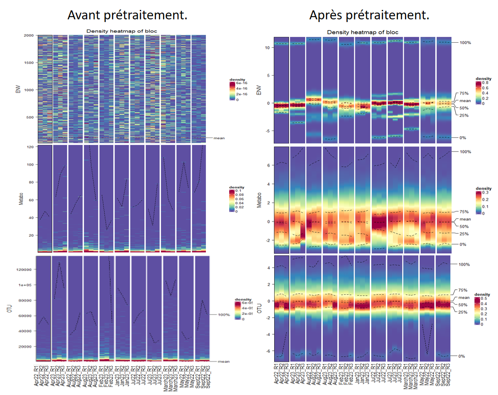
La figure 3.7 présente les résultats des analyses discriminante (PLS-DA) pour chacun des blocs ainsi que l’évolution de la silhouette en fonction du nombre de clusters. On constate que 8 à 10 groupes se dégagent entre les blocs pour les 11 classes uniques à prédire. Le bloc Metabo possède 8 groupes distincts, qui, contrairement à ce que l’on aurait supposé, ne regroupent pas parfaitement les 8 mois de prélèvement. Certains mois présentent des similarités dans leur profil métabolique, comme les mois d’Avril, Mai et Juillet 2022, ainsi que les mois de Mars, Avril et Juillet 2023. Les blocs Env et OTU ont tous deux 10 groupes, mais ces groupes sont mieux discriminés dans le bloc Env (avec un score de silhouette de 0,85). Dans le premier cas, le mois de Juillet 2022 est similaire aux mois de Mai 2022. Dans l’autre, certains réplicats de certains mois se rapprochent d’autres, comme le 2e réplicat du mois de Mai 2022 qui se rapproche des mois d’Avril 2022 et 2023, et le 3e réplicat du mois de Février 2023 qui est proche du mois de Janvier 2023.
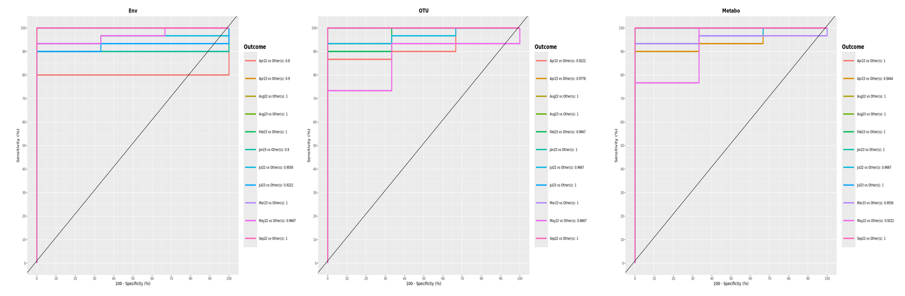
Ces résultats indiquent qu’il y a une variation au fil des mois, bien que cela ne soit pas suffisant pour conclure à une différence entre les deux années. De plus, en observant les similitudes entre certains mois, on peut en déduire que cette variation semble moins marquée que celle observée d’un mois à l’autre. Cela suggère qu’il pourrait y avoir un effet de saisonnalité.
Ces résultats semblent aller dans le sens des travaux de Paix et al. (2021) [8], qui soulignent également l’importance des variations saisonnières dans la composition du microbiote et du métabolome. L’asymétrie observée dans l’analyse multi-bloc rejoint les observations des travaux de Paix et al. selon lesquelles les communautés microbiennes et le méta-métabolome ne sont pas synchrones et peuvent varier en fonction de divers facteurs environnementaux.
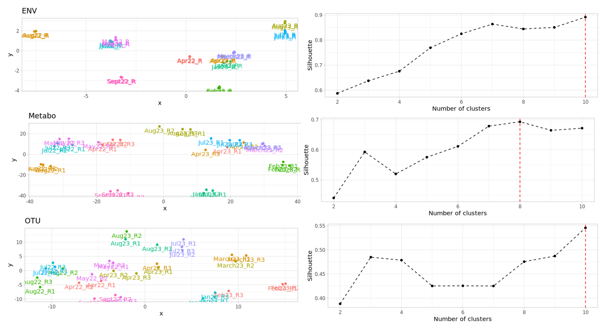
Pour pouvoir représenter visuellement l’effet de ces différents facteurs, nous avons eu recours à un réseau de corrélation, construit à partir du modèle multi-bloc. En excluant les corrélations inférieures à 0,7, nous obtenons un réseau de 993 nœuds et 11 320 arêtes. En appliquant un clustering (algorithme de Louvain), nous identifions 6 groupes dans ce réseau (Figure 3.8 a).
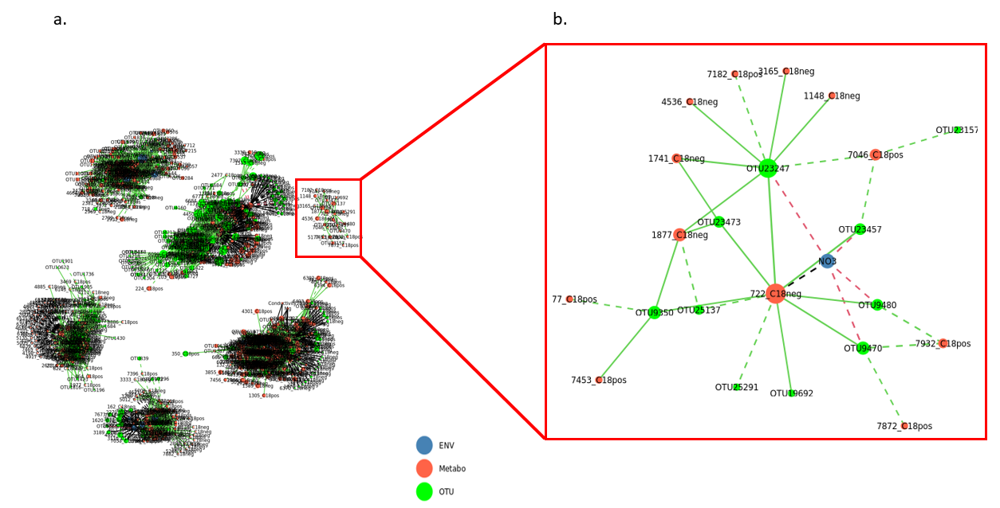
Une observation détaillée révèle que les facteurs environnementaux, tels que le nitrate (NO3) (Figure 3.8 b), influencent à la fois les métabolites et les OTUs, indirectement ou non. Par exemple, certains paramètres environnementaux peuvent affecter les OTUs, qui, à leur tour, peuvent modifier les profils métaboliques, ou vice versa. Ces interactions montrent que les facteurs environnementaux structurent les communautés microbiennes et leur fonctionnement. Selon Paix et al. (2021) [8], ces effets peuvent être directs (i.e. les facteurs influencent directement les OTUs), ou indirects (i.e. les OTUs réagissent aux changements environnementaux en modifiant les profils métaboliques). Plus globalement, cette mise en lien de l’environnement avec les OTUs illustre la plasticité phénotypique, dans le sens où un organisme peut être associé à différents métabolites selon les conditions environnementales, surtout lorsque les métabolites sont associés uniquement aux facteurs environnementaux sans que les taxons ne soient corrélés. À l’inverse, lorsque les taxons sont modulés par les facteurs environnementaux sans que les métabolites ne le soient, cela illustre le phénomène de redondance fonctionnelle. Ainsi, les résultats de notre réseau de corrélation montrent comment les facteurs environnementaux impactent les métabolites et les OTUs, s’inscrivant dans ce cadre plus large d’interactions complexes au sein du périphyton et de son environnement.
Ainsi, les résultats de notre réseau de corrélation, illustrent comment les facteurs environnementaux impactent les métabolites et les OTUs et s’inscrivent dans ce cadre plus large d’interactions complexes au sein du périphyton et son environnement.
Enfin, l’annotation des signaux a permis de réduire la taille du réseau à 179 nœuds et 485 arêtes (Figure annexe 1.19), ce qui facilite sa lecture et son interprétation. Cependant, la dernière filtration, qui a éliminé les nœuds présentant une corrélation inférieure à 0,7, soulève une interrogation : bien que cette approche vise à simplifier le réseau pour en améliorer la visibilité, elle peut également entraîner la suppression d’interactions importantes entre des métabolites faiblement corrélés. Ces interactions, bien que moins évidentes individuellement, pourraient avoir un effet synergique lorsqu’elles sont combinées. L’équilibre entre la clarté du réseau et la préservation des interactions pourrait être trouvé en diminuant le seuil de filtration.
Transposition du pipeline à COMBO
Dans ce projet, nous cherchons à étudier l’hétérogénéité spatiale des métabolites en fonction des paramètres environnementaux sur 78 prélèvements, correspondant à 39 sites échantillonnés au printemps et à l’automne 2024.
Résultats préliminaires
Notre pipeline devait nous permettre de caractériser les facteurs physico-chimiques contrôlant l’hétérogénéité métabolique entre ces 78 échantillons. Cependant, le modèle créé présentait un taux d’erreur de 87 %. Les courbes ROC des métabolites ont montré un AUC moyen de 0,62, avec 0,66 pour le bloc PAM, 0,71 pour la physico-chimie, et 0,5 pour la physico-chimie de l’agence de l’eau (Figure annexe 1.16). De telles performances peuvent s’expliquer par l’hétérogénéité intra-site des échantillons (notamment au niveau des métabolites) qui pourrait conduire à un recouvrement entre les sites avec une certaine homogénéité ; en effet, il semble exister très peu de différences entre les sites de prélèvement, mais nous pouvons observer une forte influence de la saisonnalité (Figure annexe 1.17 et figure 3.10).
Ordination via les paramètres physicochimiques
Afin de pallier ce problème, nous avons choisi de regrouper les échantillons en fonction de leur profil physico-chimique, ce qui nous a permis de constituer 7 classes. Le modèle obtenu par la suite présente un taux d’erreur moyen de 52 %. La courbe ROC a révélé un AUC de 0,78 pour la métabolomique, 0,63 pour le bloc PAM et 0,9 pour la physico-chimie (Figure annexe 1.20). Mais nous observons toujours une séparation entre les saisons, malgré l’ordination selon la physico-chimie des sites.
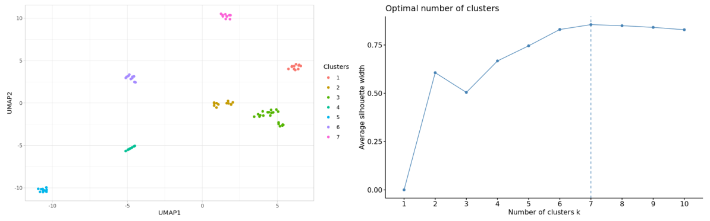
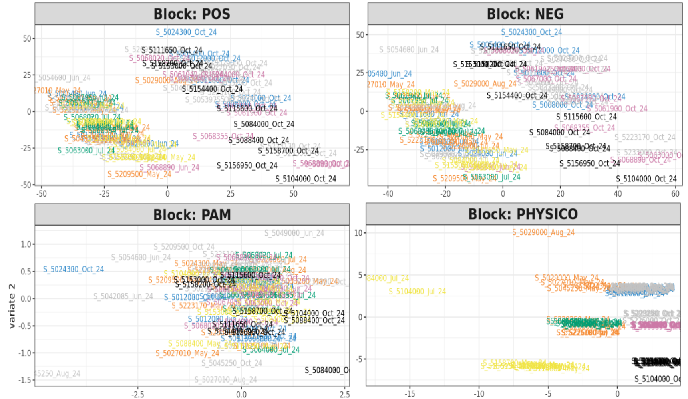
Conclusion
L’objectif de ce stage était de développer un pipeline d’analyse multi-bloc pour l’intégration de données hétérogènes. Pour ce faire, nous avons d’abord réalisé un benchmark de trois outils d’analyse multi-bloc : Consensus-OPLS, RGCCA et DIABLO. Ce benchmark a révélé que DIABLO est le mieux adapté à notre problématique, en raison de ses performances et de notre capacité à l’adapter au pipeline développé par Paix et al. (2019).
Dans un second temps, nous avons cherché à trouver la bonne combinaison de méthodes de filtration et scaling. Nous avons montré que l’indice freqCut pour la sélection, associé au centered log ratio (CLR) pour le scaling, permet d’obtenir un modèle alliant bonne performance (10 % d’erreur) et un nombre conséquent de variables (8 107).
L’application à MICROBIOMIQ, pour l’étude de l’hétérogénéité temporelle, a révélé que les métabolites et les OTUs peuvent adopter des profils similaires au cours d’une année, avec des redondances d’un mois sur l’autre. De plus, les facteurs environnementaux structurent les OTUs et les métabolites de manière indirecte, mais aussi de manière directe. Cela met en lumière des phénomènes de plasticité phénotypique, où un organisme peut être associé à différents métabolites, surtout lorsque ces métabolites sont liés uniquement aux facteurs environnementaux sans corrélation avec les taxons. À l’inverse, la redondance fonctionnelle se manifeste lorsque les taxons sont modulés par les facteurs environnementaux sans que les métabolites ne le soient.
L’application à COMBO pour l’étude de l’hétérogénéité spatiale, l’hétérogénéité intra-site des échantillons n’a pas permis de révéler l’hétérogénéité spatiale du périphyton. Là où le modèle pouvait atteindre un taux d’erreur aussi bas que 10 % avec MICROBIOMIQ, avec COMBO, ce taux atteint 87 %. Nous sommes parvenus à descendre à 52 % en faisant du clustering par la physico-chimiques. Mais cela reste malheureusement insuffisant pour conclure quant à l’influence de l’environnement sur le métabolisme du périphyton, au vu de l’influence beaucoup trop marquée de la saisonnalité.
Une piste à explorer sur COMBO serait d’étudier l’hétérogénéité spatiale au sein de chaque saison, ce qui permettrait d’isoler l’effet de la saisonnalité. Une autre approche, consisterait à explorer d’autres méthodes de traitement qui pourraient être mieux adaptées.
Au final, le pipeline que nous avons mis en place peut s’adapter à de nombreux types d’analyses multi-bloc, car au cours de ce stage, nous avons développé un panel d’outils assez large (de filtration, le scaling, la visualisation des blocs et l’entraînement des modèles) pouvant être repris et réagencé pour d’autres analyses. Cette versatilité constitue un objectif central dans la mesure où la compréhension du lien entre l’environnement et l’assemblage des communautés microbiennes sur le plan du métabolome et de la taxonomie reste à développer [16]. Aussi, peu d’études ont réussi à intégrer efficacement des données hétérogènes [23].
Annexe
Méthodologie des projets MICROBIOMIQ et COMBO
5.1 Sites d’Étude et Échantillonnage
Pour MICROBIOMIQ, un suivi longitudinal a été réalisé sur 1 an et demi sur l’étang de Gazinet basé sur une colonisation mensuelle sur lame de verre avec un total de 4 réplicats par mois (Fig : 1.11).
Pour COMBO, un total de 100 sites a été sélectionné pour l’étude, en tenant compte des données existantes sur la physico-chimie et l’état écologique selon la directive cadre sur l’eau (WFD) (Fig : 1.12).
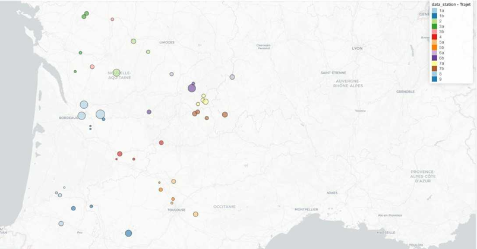
Dans ce projet, les échantillons de communautés périphytiques ont été collectés à partir de roches, avec un total de 4 réplicats par site. Dans les deux projets, les échantillons ont été immédiatement congelés dans de l’azote liquide pour stopper toute réaction enzymatique et ont ensuite été conservés à -80°C jusqu’analyse.
5.2 Acquisition des données omiques et autres
Les paramètres physico-chimiques de l’eau, tels que la température, le pH, la conductivité, l’oxygène dissous, et les micropolluants, ont mesurés en parallèle de l’échantillonnage du périphyton dans le cas de MICROBIOMIQ et de COMBO. Dans les cas de COMBO des données supplémentaires ont été collectées auprès de l’agence de l’eau Adour Garonne.
La production des données métagénomiques ont été réalisées par la Plateforme Génome Transcriptome de Bordeaux (PGTB). L’extraction de l’ADN a été réalisée en utilisant le kit Dneasy PowerBioFilm (Qiagen), suivie d’une quantification par fluorescence à l’aide du Qubit Flex (Thermo Fisher Scientific) après chaque extraction. Pour garantir la qualité des analyses, des témoins positifs ont été inclus à chaque étape de la mise en plaque en utilisant des mocks communautés fongiques et, bactériennes synthétiques à la composition connue. Les bibliothèques de séquençage pour les analyses métagénomiques ont été préparées en utilisant le kit Qiaseq FX (Qiagen). Les échantillons ont été ensuite séquencés sur une plateforme Illumina NovaSeq 6000, utilisant un protocole de 300 cycles (puce P3 en configuration de séquençage 2x150 pb). L’affectation taxonomique des séquences a été réalisée avec Kraken2, en utilisant la base de données NCBI RefSeq V208 non-redondante (nt) de 308 GB. L’estimation des proportions des taxons a été effectuée avec Bracken, permettant une quantification des organismes présents dans les échantillons au niveau du genre. Une étape de filtration a été effectuée, au cours de laquelle nous avons retiré les eucaryotes supérieurs et les virus. À la fin de ce processus, nous avons obtenu deux fichiers : le fichier d’abondance, le fichier de taxonomie.
Pour l’acquisition des données métabolomiques, nous avons utilisé une approche méta-métabolomique « non-ciblée » basée sur la spectrométrie de masse haute résolution (HRMS). L’extraction des métabolites a été effectuée en utilisant une méthode d’extraction biphasique permettant l’obtention d’une fraction hydrophile (Methanol/H20) et d’une fraction lipophile (Methyl tert-butyl ether /Methanol). Dans le cadre de cette étude, seule la phase hydrophile a été analysée par chromatographie en phase liquide couplée à la spectrométrie de masse (LC-HRMS) sur un instrument Thermo Fisher Q Exactive Orbitrap. L’acquisition a été réalisée de manière à permettre une fragmentation des cinq ions (MS1) les plus intenses en vue d’acquérir de l’information structurale via l’utilisation de base de données spectrales (MS2) ou des logiciels de prédiction basés sur du machine learning tels que SIRIUS. Les données ainsi acquises ont été traitées avec le logiciel MS-DIAL5 permettant d’obtenir une matrice contenant l’intensité des signaux dans les différents échantillons et pour chacun de ces signaux l’ensemble des ions décrivant les spectres de masse MS1 et MS2. Cette liste de signaux a ensuite été corrigée/filtrée pour la présence/absence des signaux (conservation des signaux présent dans plus de 75 % des échantillons), la dérive du signal (CV < 30 % pour les pool d’échantillons), l’intensité des signaux (intensité échantillons > 10 fois celle dans les blancs). Les informations spectrales ont ensuite été utilisées pour procéder à l’annotation des signaux à l’aide du logiciel SIRIUS et plus spécifiquement le système de classification NPClassifier. Ce dernier consiste en 3 niveaux de classification : « pathway », « superclass » et « class » qui ont permis une comparaison avec classification taxonomique. Au final, nous avons obtenue 2 fichiers, l’un contenant l’intensité des signaux et l’autre leur annotation.
L’activité photosynthétique sera évaluée à l’aide d’un PhytoPAM, qui mesurera le rendement photosynthétique et la concentration de chlorophylle a. Les échantillons seront préparés en grattant les biofilms et en les remettant en suspension dans l’eau de l’étang avant les mesures.
Double filtration VIP et loading du modèle Consensus-OPLS
La Figure annexe 1.13 montre chacun des échantillons de chaque bloc en fonction de leur VIP et loading. Nous avons fait l’hypothèse qu’en sélectionnant les variables selon leur VIP et leur loading, en passant en amont par un modèle simple bloc, nous arriverions à améliorer le modèle, comme le suggèrent Mishra et al. (2021) [27].
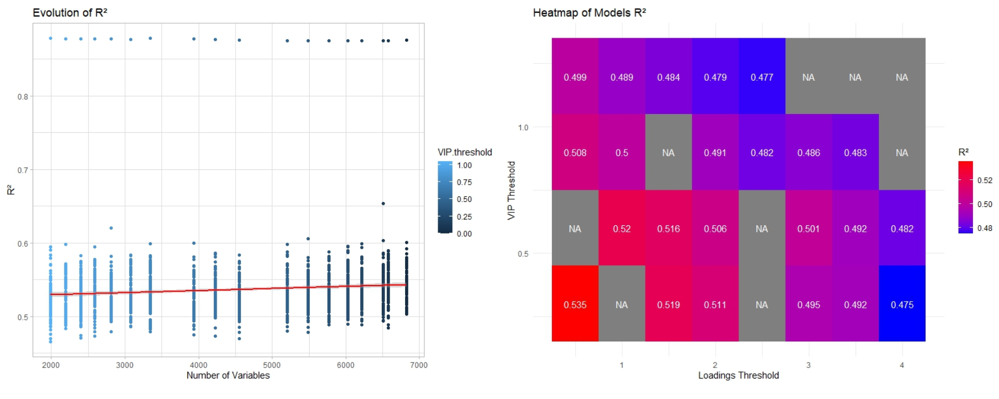
Les résultats suggèrent que le modèle Consensus-OPLS semble très peu sensible au nombre de variables et que, globalement, nous restons aux alentours d’un R² de 0,5.
Modèle Block-PLSD et Block-(s)PLSDA
Le modèle Block-(s)PLSDA permet de sélectionner selon un modèle sparse Generalised Canonical Correlation Analysis (SGCCA) qui inclut une pénalisation par lasso sur les vecteurs afin d’identifier un sous-ensemble de variables clés. Cependant, sur nos jeux de données, cette sélection ne semble pas grandement améliorer les performances du modèle (Figure annexe 1.14) (test de Kruskal Wallis p-value = 0.956, df = 1). La figure annexe 1.15 illustre les étapes à suivre pour l’entraînement de ces modèles.
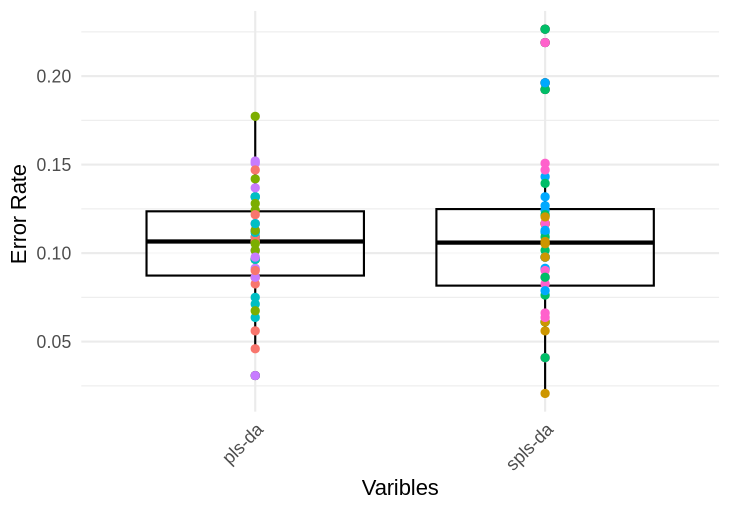
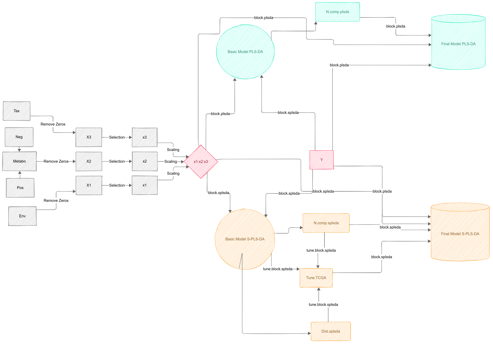
Évaluation du modèle avec les données de COMBO (ROC)
Le modèle Block-PLSDA a de mauvaises performances (taux d’erreur supérieur à 87%) comme l’illustre la ROC 1.16). Ces performances peuvent s’expliquer par l’homogénéité spatiale entre sites et l’influence des saisons comme le montre la projection UMAP des données (Figure annexe 1.17). Une influence que l’ordination par les paramètres physico-chimiques n’a pas pu effacer (Figures annexe 3.10 et 1.20).
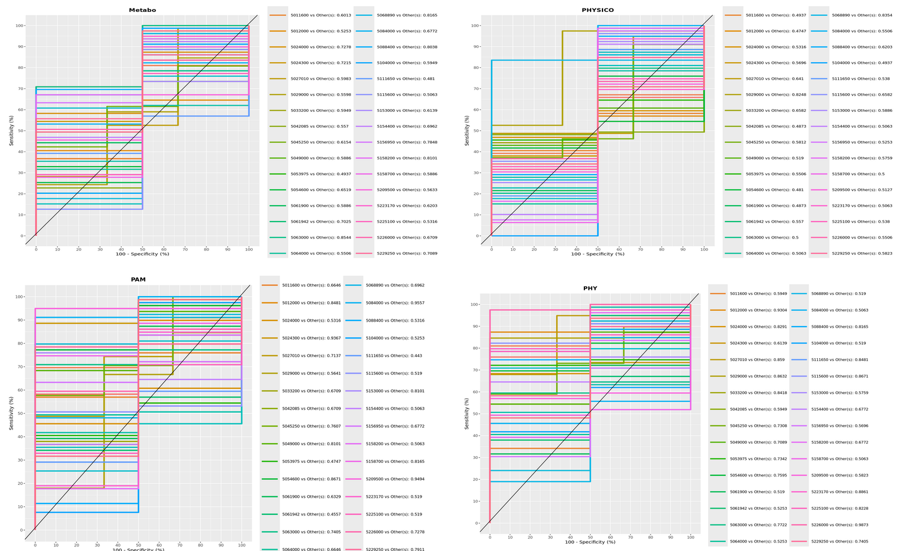
Sortie graphique et annotation
Pour mettre en évidence (de façon visuelle) les relations entre les différentes variables des blocs de notre jeu de données, nous avons opté pour une représentation en réseau, notamment grâce à la fonction network() du package mixOmics (Figure annexe 1.18). Cependant, la sortie graphique de cette fonction devient difficilement lisible lorsque nous sélectionnons plusieurs centaines (voire quelques milliers) de variables. Nous avons donc retravaillé cette sortie pour proposer celle en (Figure 3.8) et celle en (Figure annexe 1.19), qui est la version avec tous les signaux métaboliques et les OTUs annotés.
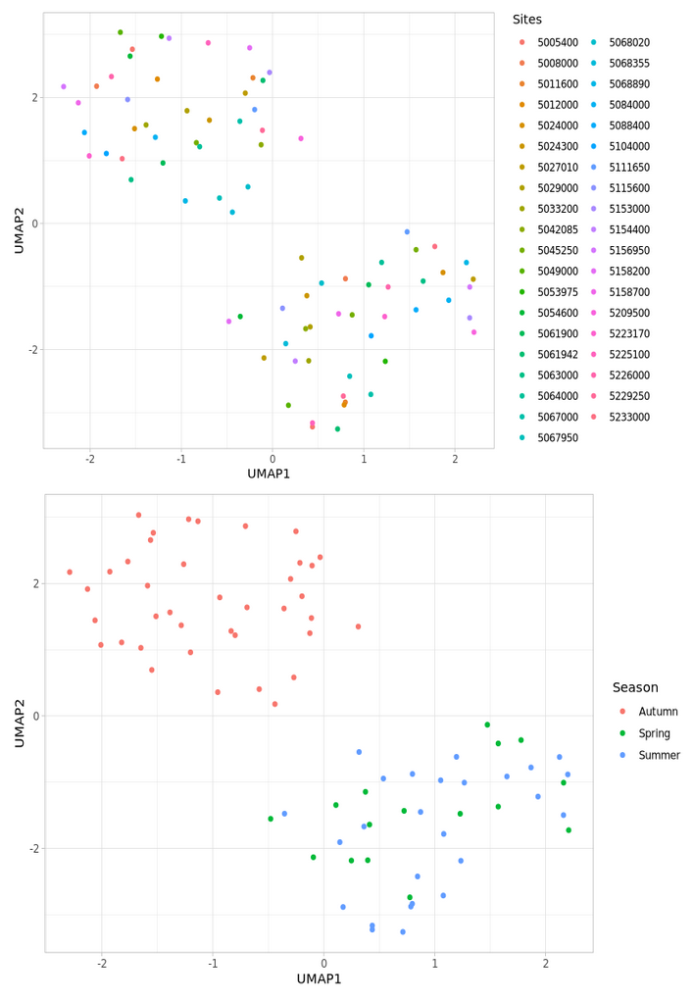
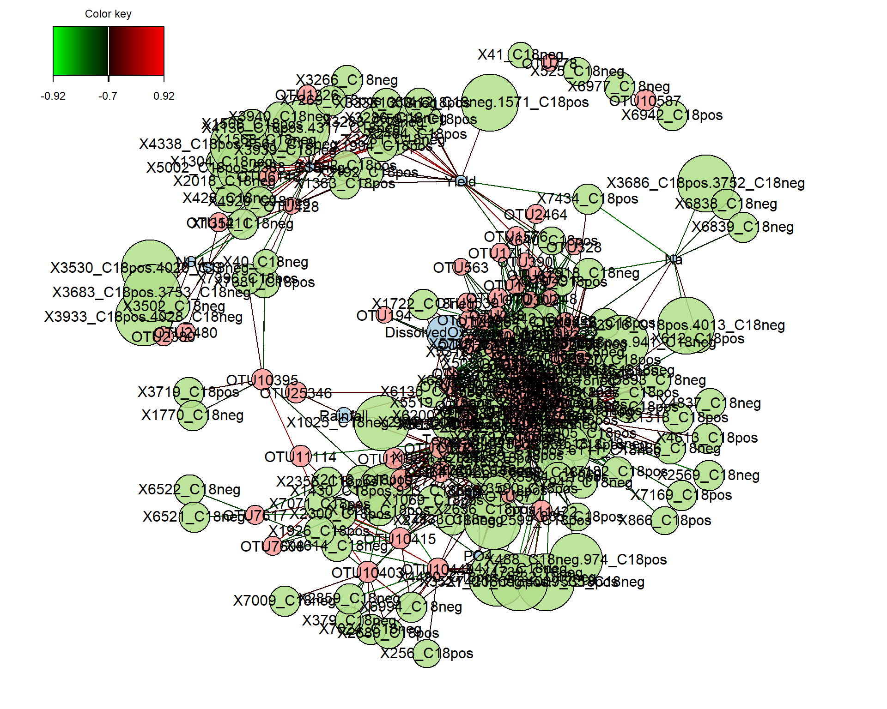
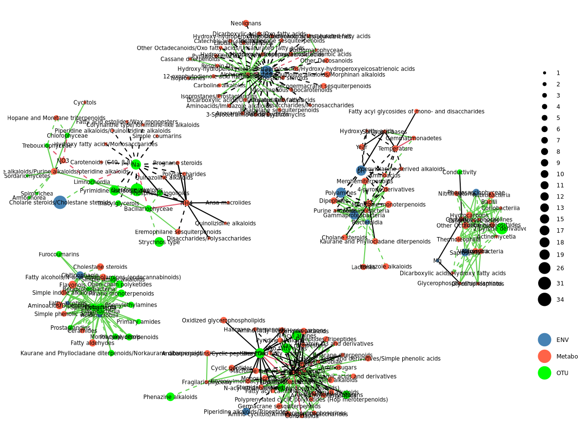
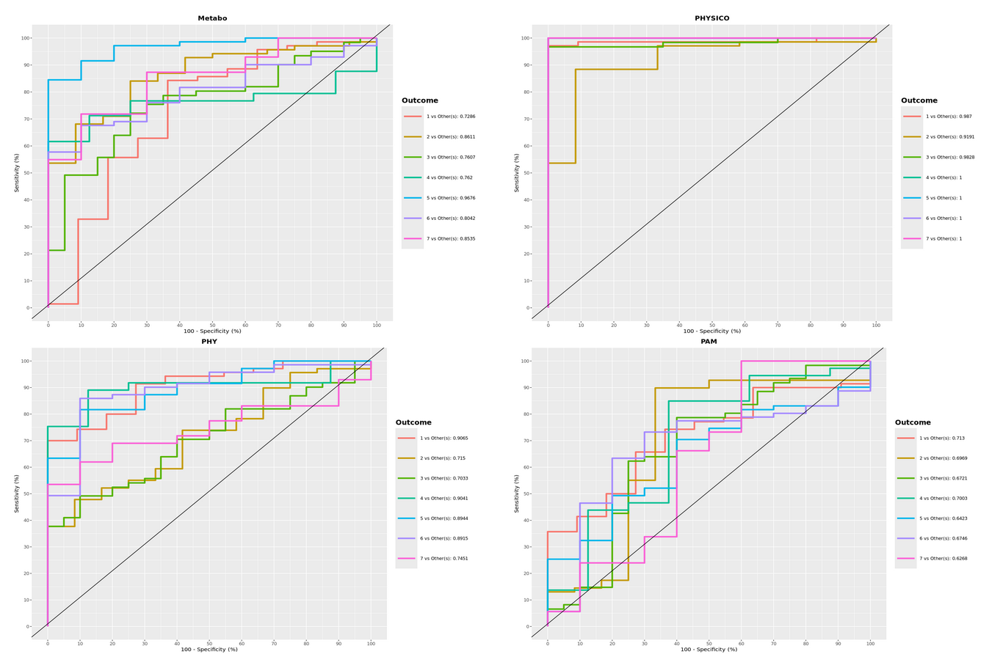
Bibliographie
[1] S. H. H. Anuar, Z. A. Abas, N. M. Yunos, N. H. M. Zaki, N. A. Hashim, M. F. Mokhtar, and A. F. Nizam. Comparison between louvain and leiden algorithm for network structure : a review. In Journal of Physics : Conference Series, volume 2129, page 012028. IOP Publishing, 2021.
[2] K. P. Balanda and H. L. MacGillivray. Kurtosis : a critical review. The American Statistician, 42(2) :111–119, 1988.
[3] et al. Baum. Multiblock pls : Block dependent prediction modeling for python. Journal of Open Source Software, 4(34) :1190, 2019.
[4] M. Bersanelli, E. Mosca, D. Remondini, et al. Methods for the integration of multi-omics data : mathematical aspects. BMC Bioinformatics, 17(Suppl 2) :S15, 2016.
[5] J. Boccard and D. N. Rutledge. A consensus orthogonal partial least squares discriminant analysis (opls-da) strategy for multiblock omics data fusion. Analytica Chimica Acta, 769 :30–39, 2013.
[6] A. Cambiaghi, M. Ferrario, and M. Masseroli. Analysis of metabolomic data : tools, current strategies and future challenges for omics data integration. Briefings in Bioinformatics, 18(3) :498–510, 2017.
[7] M. P. Campos and M. S. Reis. Data preprocessing for multiblock modelling – a systematization with new methods. Chemometrics and Intelligent Laboratory Systems, 199 :103959, 2020.
[8] N. Carriot, B. Paix, S. Greff, B. Viguier, J.-F. Briand, and G. Culioli. Integration of lc/ms-based molecular networking and classical phytochemical approach allows in-depth annotation of the metabolome of non-model organisms - the case study of the brown seaweed taonia atomaria. Talanta, 225 :121925, 2021.
[9] E. Catelli, Z. Li, G. Sciutto, P. Oliveri, S. Prati, M. Occhipinti, A. Tocchio, R. Alberti, T. Frizzi, C. Malegori, and R. Mazzeo. Towards the non-destructive analysis of multilayered samples : A novel xrf-vnir-swir hyperspectral imaging system combined with multiblock data processing. Analytica Chimica Acta, 1239 :340710, 2023.
[10] R.R.S. Correia, M.R. Miranda, and J.R.D. Guimarães. Mercury methylation and the microbial consortium in periphyton of tropical macrophytes : Effect of different inhibitors. Environmental Research, 112 :86–91, 2012.
[11] N. Creusot, B. Chaumet, M. Eon, et al. Metabolomics insight into the influence of environmental factors in responses of freshwater biofilms to the model herbicide diuron. Environmental Science and Pollution Research, 29 :29332–29347, 2022.
[12] J.F. Ghiglione, F. Martin Laurent, and S. Pesce. Microbial ecotoxicology : an emerging discipline facing contemporary environmental threats. Environmental Science and Pollution Research, 23(5) :3981–3983, 2016.
[13] H. Guasch, M. Ricart, J. Lopez Doval, C. Bonnineau, L. Proia, et al. Influence of grazing on triclosan toxicity to stream periphyton. Freshwater Biology, 61(12) :2002–2012, 2016.
[14] Y.I. Gubelit and H.-P. Grossart. Frontiers in microbiology. 11 :1275, 2020.
[15] Yehudit Hasin, Marcus Seldin, and Aldons Lusis. Multi-omics approaches to disease. Genome biology, 18 :1–15, 2017.
[16] J. Hellal, L. Barthelmebs, A. Bérard, A. Cébron, G. Cheloni, S. Colas, C. Cravo-Laureau, C. De Clerck, N. Gallois, M. Hery, F. Martin-Laurent, J. Martins, S. Morin, C. Palacios, S. Pesce, A. Richaume, and S. Vuilleumier. Unlocking secrets of microbial ecotoxicology : recent achievements and future challenges. FEMS Microbiology Ecology, 99(10) :fiad102, 2023.
[17] P. Hieter and M. Boguski. Functional genomics : It’s all how you read it. Science, 278 :601–602, 1997.
[18] M. Kuhn, J. Wing, S. Weston, A. Williams, C. Keefer, A. Engelhardt, T. Cooper, Z. Mayer, B. Kenkel, and R Core Team. R package, 2010.
[19] F. Larras, B. Montuelle, F. Rimet, et al. Seasonal shift in the sensitivity of a natural benthic microalgal community to a herbicide mixture : impact on the protective level of thresholds derived from species sensitivity distributions